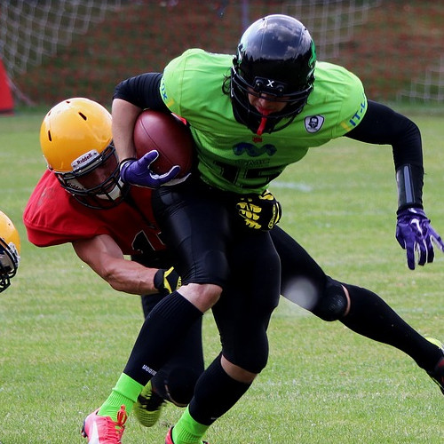

Lee los últimos temas de interés en el Centro, da tu opinión acerca
de los mismos o abre tu propio hilo si tienes algo nuevo que aportar.
¡Leemos vuestras propuestas!
Problema con las fuentes del gimnasio 3
Paula86
Hola, llevo varios años siendo miembro de este centro y es la primera vez que escribo en este foro. Hace una semana que las fuentes del gimnasio 3 no funcionan correctamente, y dan el agua con poca fuerza, lo que hace imposible beber y rellenar las botellas. Por favor, agradecería si pueden arreglarlo pronto, es un incordio para los que traemos una botella de casa.
Aprovecho para dar las gracias por las nuevas cintas de correr, el diseño es muy cómodo y hace más agradable estar tanto tiempo sobre ella.
Un saludo, Paula.

manolorugby
también puedes llenarla en los baños jaja salu2
J0hnD03
Hola Paula.
Estamos trabajando en arreglar las fuentes, ha habido un problema con el caudal y tenemos que esperar a que manden un técnico especializado en el tema. Si todo va según lo previsto estarán arregladas para la semana que viene. Lamentamos no poder hacer nada antes pero no es algo que esté en nuestras manos.
Por favor, disculpen las molestias.
Un saludo,
John Doe, técnico del Centro.
Nivel de las clases de kickboxing
joseluiscr7
Hola, me he apuntado a las clases de kickboxing pero no sé cómo está el nivel. He practicado kickboxing durante mucho tiempo y no quiero un nivel amateur, necesito algo que me motive.
Gracias por responder.
Pilarica
Yo estoy en clase de kickboxing y hay buen nivel, ¿por qué no vienes el lunes y nos enseñas lo que sabes?
manolorugby
yo nunca he estado en kickboxing pero como buen español tengo que dar mi opinión aunque no tenga ni idea jaja salu2
joseluiscr7
Gracias, el lunes iré a mi primera clase a ver lo que hay.
Un saludo.